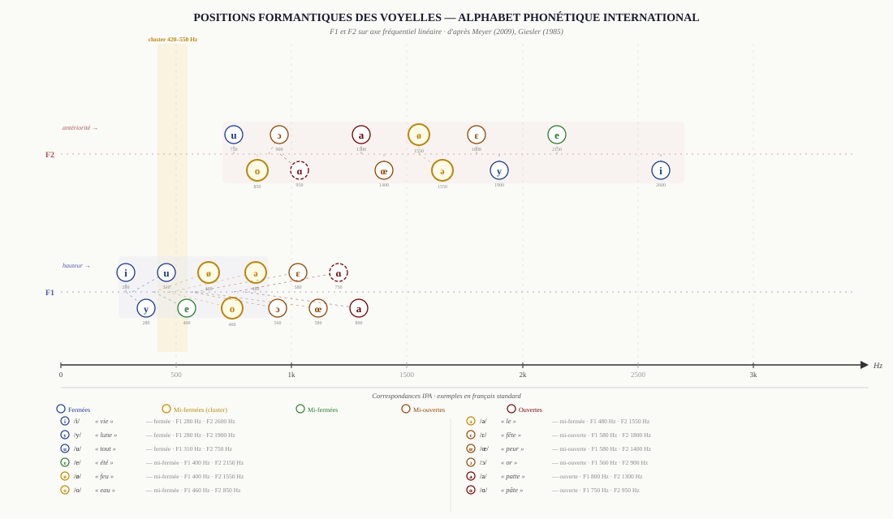

Étude quantitative des formants spectraux instrumentaux
Analyse de 5 914 échantillons · 30 instruments · Mars 2026
Ce document constitue la référence quantitative la plus complète disponible pour l'analyse formantique des instruments de l'orchestre. Il examine comment les doublures orchestrales classiques s'expliquent par l'assemblage complémentaire des formants spectraux instrumentaux. Les formants sont les zones de résonance définissant le timbre : lorsque deux instruments sont doublés, leurs spectres se combinent pour créer une couleur timbrale homogène ou complémentaire.
L'analyse repose sur 5 914 échantillons professionnels couvrant 30 instruments de l'orchestre, validée contre quatre sources académiques indépendantes. Le taux de concordance global est de 93 % (27/29 instruments comparables).
| Source | Titre / Base | Description | Éditeur |
|---|---|---|---|
| Backus (1969) | The Acoustical Foundations of Music | Référence historique, mesures ciblées cuivres et bois | W.W. Norton & Co. |
| Giesler (1985) | Instrumentation: Ein Hand- und Lehrbuch | Mesures détaillées, associations vocaliques explicites, 13 instruments | Breitkopf & Härtel |
| Meyer (2009) | Acoustics and the Performance of Music (5e éd.) | Analyse acoustique avec couleurs vocales, zones vocaliques définies | Springer-Verlag |
| SOL2020 Orchidea | Studio On Line | 12 instruments solistes, 2 391 échantillons sustained analysés | Orchidea / EIC |
| Yan_Adds | Ajouts de provenances diverses | 18 instruments supplémentaires, 1 646 échantillons (ensembles, bois auxiliaires, cuivres graves) | VSL, Con Timbre, échantillons personnels |
| McCarty/CCRMA (2003) | Vowel space chart for orchestral instruments | Référence directionnelle — limitations d'exactitude reconnues par l'auteur | CCRMA Stanford |
Techniques INCLUSES : normal, arco, sustain, ordinario, vibrato, non-vibrato, flautando — dynamiques pp à ff. Ces techniques produisent les formants structurels stables de l'instrument.
Techniques EXCLUES : pizzicato, col legno, tremolo, trilles, harmoniques artificiels, multiphoniques, flutter tongue, sourdines (analysées séparément), glissandi, portamento. Ces techniques modifient radicalement le spectre et ne représentent pas le timbre fondamental.
| Paramètre | Valeur / Description |
|---|---|
| FFT Size | 4 096 samples |
| Sample Rate | 44 100 Hz |
| Résolution fréquentielle | ~10,8 Hz/bin |
| Plage analysée | 100–3 000 Hz |
| Données d'entrée | Enveloppes spectrales pré-calculées (specenv, 1 024 bins) — fenêtrage Hann + lissage appliqués en amont par le pipeline Orchidea |
| Algorithme | Détection de pics sur enveloppe spectrale — pic le plus proéminent (pas premier pic) |
| Seuil d'amplitude | −30 dB sous le pic maximum de la région |
| Distance minimale | 70 Hz entre pics (~6.5 bins) |
Choix méthodologique critique : la détection du pic le plus proéminent (et non du premier pic) capture le formant perceptuel principal, évite les résonances basses secondaires, et est cohérente avec la perception auditive.
Dans cette étude, F1, F2, … F6 désignent les pics spectraux
principaux extraits par analyse d'enveloppe spectrale (scipy.signal.find_peaks).
Ces pics correspondent aux résonances principales du système acoustique de l'instrument
(corps, colonne d'air, cavités) et sont mis en regard des voyelles cardinales par analogie
perceptive — sans prétendre à une équivalence stricte avec les formants du tractus
vocal humain (résonances du conduit vocal au sens de Fant, 1960).
Pour les instruments à vent cylindriques (clarinette, flûte), où aucun formant fixe n'existe au sens strict, la notation F1 désigne la zone d'énergie spectrale dominante — terminologie plus exacte que « formant » pour ces familles.
Pour les instruments à large tessiture, le formant F1 (premier pic spectral) est extrêmement instable d'un registre à l'autre : il ne caractérise pas le timbre global de l'instrument, mais seulement la note jouée à ce moment.
Exemple démonstratif : le violon présente un F1 dont l'écart-type atteint σ=651 Hz selon le registre — soit une variation de plus d'une octave. Cette instabilité rend F1 peu exploitable comme signature timbrale.
La mesure Fp (Formant Principal) — centroïde spectral pondéré en énergie dans une bande fréquentielle optimisée par instrument — résout ce problème. Le centroïde est la « moyenne de masse » du spectre dans une bande donnée : il intègre la contribution de toutes les fréquences au lieu d'isoler un pic unique.
Comparaison Fp vs F2 (écart-type σ, instrument ordinario) :
| Instrument | Fp (Hz) | σ Fp | F2 (Hz) | σ F2 | Gain de stabilité |
|---|---|---|---|---|---|
| Violon | 893 | 92 | 1 518 | 651 | 7.1× |
| Trompette | 1 046 | 98 | 1 324 | 1 018 | 10.4× |
| Clarinette Sib | 1 412 | 169 | 1 130 | 795 | 4.7× |
| Cor | 738 | 112 | 1 106 | 734 | 6.5× |
Le Fp est systématiquement plus stable que F1 ou F2 et correspond au Hauptformant (formant principal perceptif) décrit par Meyer (2009) pour les cordes. Il représente la coloration timbrale globale de l'instrument telle que l'oreille la perçoit, indépendamment de la note jouée.
22 instruments sur 30 bénéficient d'une mesure Fp validée dans cette étude. Pour les 8 instruments restants (dont la flûte et le hautbois qui ont un spectre très variable), F1 ou F2 reste utilisé.
L'écart-type σ du Fp reflète indirectement la largeur de bande (bandwidth) de la résonance principale de l'instrument. Un σ(Fp) faible indique un formant étroit et bien défini (forte sélectivité, Q élevé) ; un σ(Fp) élevé indique un formant large et diffus. Ainsi, le violon (σ=92 Hz) possède un timbre spectralement plus focalisé que la clarinette Sib (σ=169 Hz), ce qui se confirme perceptivement : le violon a une « couleur vocalique » plus identifiable que la clarinette dont le spectre évolue fortement selon le registre.
Le système vocalique fournit un cadre intuitif pour décrire le timbre instrumental. Meyer (2009) établit des correspondances entre zones formantiques et voyelles de la langue allemande/française. Ce tableau étend cette correspondance à l'ensemble du corpus SOL2020 + Yan_Adds.
| Voyelle | Fréquence (Hz) | Exemples français | Perception timbrale | Instruments représentatifs (F1 ou Fp) |
|---|---|---|---|---|
| u (oo) | 200–400 | bouche, tour | Profondeur, gravité | Contrebasse (172), Tuba basse (226), Tuba CB (226), Contrebasson (226), Trombone (237), Flûte basse (301) |
| o (oh) | 400–600 | beau, veau | Plénitude, rondeur | Alto (377), Cor (388), Sax alto (398), Cor anglais (452), Cl. Sib (463), Basson (495), Ens. Violons (495), Violon (506) |
| å (aw) | ~600–800 | pâte, âme, (entre o et a) | Transition, chaleur | Cl. Mib (678), Flûte (743), Hautbois (743), Trompette (786) |
| a (ah) | 800–1 250 | pas, classe | Puissance, présence | Cor Fp (738), Violon Fp (893), Basson Fp (1 079), Trompette Fp (1 046), Cor anglais Fp (1 135) |
| e (eh) | 1 250–2 600 | fée, étoile | Clarté, brillance | Cl. Sib Fp (1 412), Flûte Fp (1 535), Hautbois Fp (1 485), Cl. Mib Fp (1 266), Petite flûte (1 109) |
| i (ee) | > 2 600 | vie, siffler | Brillance extrême, stridence | Petite flûte (1 992 F2), Trompette+sourdine harmon (2 358) |

Sources : Meyer (2009) — Acoustics and the Performance of Music (5e éd.) · SOL2020 Orchidea · Yan_Adds · pipeline v22 validé.